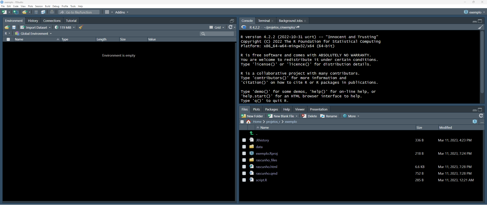
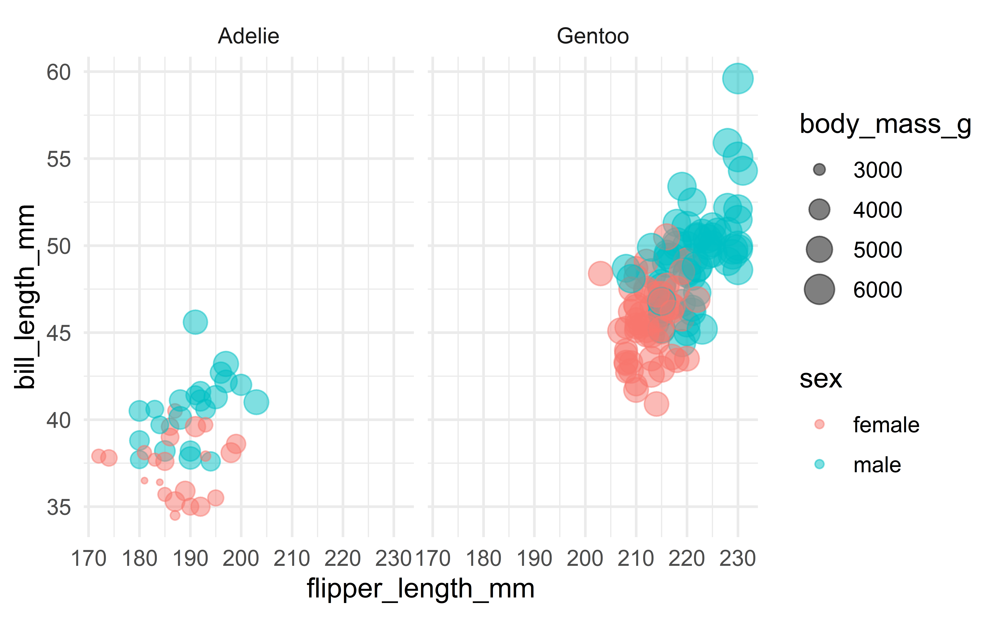
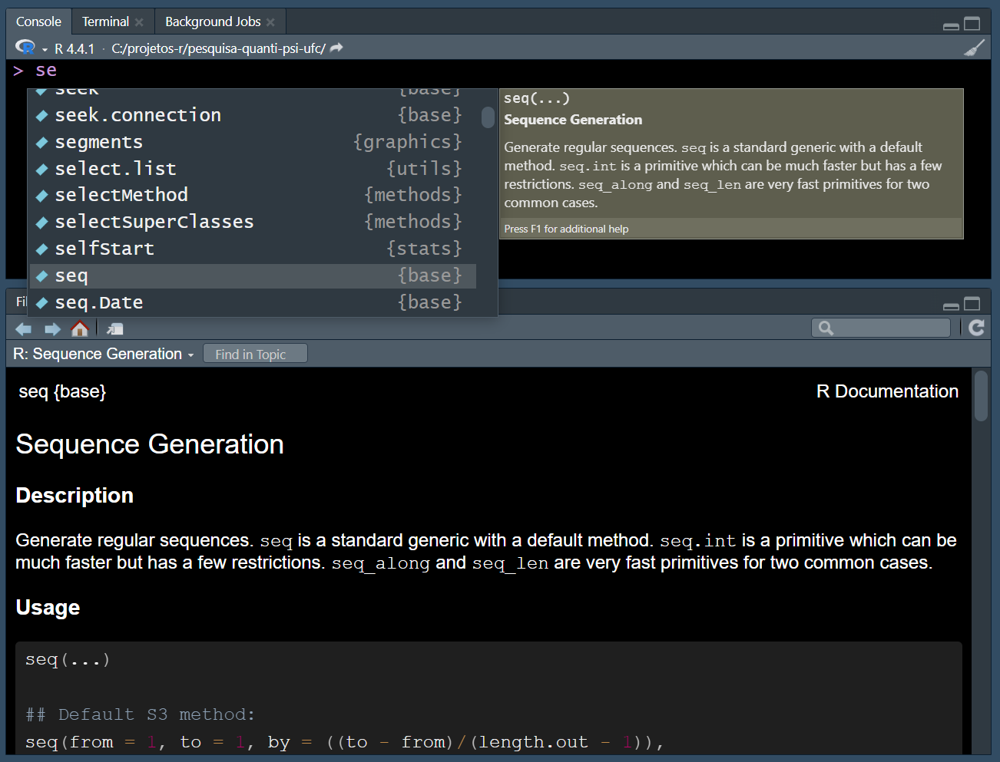
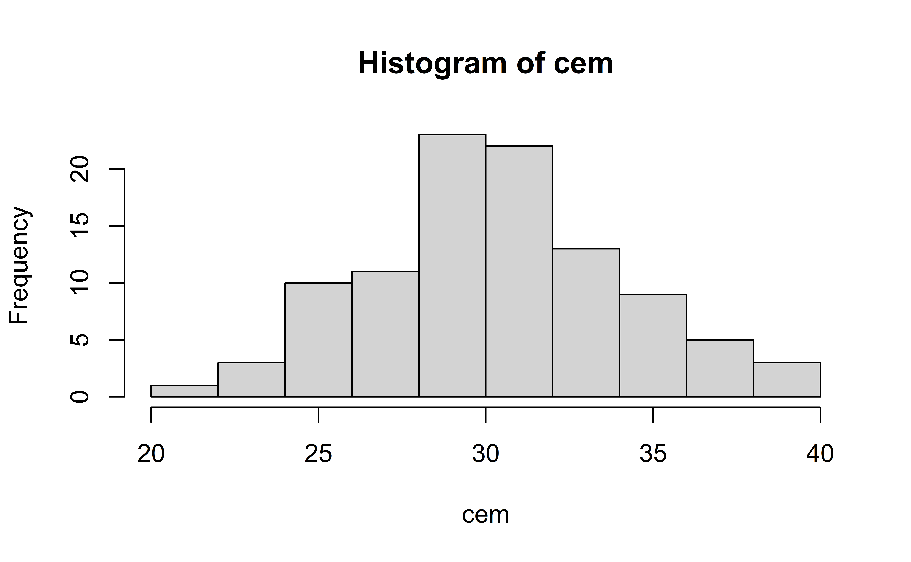

10+10
#> [1] 20
10/2
#> [1] 5
10*2+5
#> [1] 25
10-3
#> [1] 7
10^2
#> [1] 100
100^(1/2)
#> [1] 10
27^(1/3)
#> [1] 3Introdução ao R
Fluxo de trabalho: fundamentos
R e Rstudio
-02.png)
- R é uma linguagem de programação estatística de código aberto
- R também é um ambiente para computação estatística e gráficos
- Pode ser facilmente expandido com pacotes

- RStudio é uma interface conveniente para R chamada IDE (integrated development environment - ambiente de desenvolvimento integrado),
- Por exemplo: “Eu escrevo código R no RStudio IDE”
- RStudio não é um requisito para programação com R, mas é muito comumente usado por programadores R e cientistas de dados
R
R Studio
Por que usar o R?
- Gratuito
- Pesquisa reprodutível (para outros cientistas e o seu eu do futuro)
- Flexível
- Milhares de funções para todo tipo de análise
- Novos funções são desenvolvidas o tempo todo ao redor do mundo
Eu tenho que aprender uma linguagem de programação para usar o R?

Sim, mas é como aprender um novo idioma: há desconforto inicial, mas, com a prática, é possível se tornar fluente!
Painéis do R Studio: console e Help
Codificação básica
Cálculos matemáticos básicos
Operadores aritméticos
-
+: adição -
-: subtração -
*: multiplicação -
/: divisão -
^ou**: exponenciação -
x^(1/2): raiz quadrada -
x^(1/3): raiz cúbica
Exercício
03:00
- Divida 250 por 10
- Eleve 11 ao quadrado
- Multiplique 10 por 2 e some 5
- Subtraia 10 de 20 e divida por 10
- Some 40 e 50 e multiplique por 10
- Cálcule a raiz cúbica de 512
Respostas
250/10
#> [1] 25
11^2
#> [1] 121
10*2+5
#> [1] 25
(20-10)/10
#> [1] 1
(40+50)/10
#> [1] 9
512^(1/3)
#> [1] 8Criação de objetos com o operador de atribuição <-
x <- 3
x
#> [1] 3
y <- 10*10
y
#> [1] 100- O valores de
xouynão são impressos; apenas armazenados - Para visualizar o valor de um
objeto, execute-o
Instruções de atribuição
- Todas as instruções de atribuição têm o mesmo formato
nome_do_objeto <- "valor"
nome_do_objeto
#> [1] "valor"- Ao ler esse código, diga: “o nome do objeto obtém valor”
- Atalho de teclado do R Studio: Alt + “-” (sinal de menos)
Exercício
03:00
Crie os seguintes objetos:
-
acom valor2 -
bcom valor10 -
ccom valor5 -
dcom valor10*2
Respostas
a <- 2
a
#> [1] 2
b <- 10
b
#> [1] 10
c <- 5
c
#> [1] 5
d <- 10*2
d
#> [1] 20As operações podem ser realizadas entre objetos
a*b
#> [1] 20
a+b
#> [1] 12
a/b
#> [1] 0.2
a-b
#> [1] -8Exercício
03:00
- Divida
cporde somea - Some
aebe divida porc - Multiplique
aporbe somed - Some
ccomde divida pora
Respostas
(c/d) + a
#> [1] 2.25
(a+b)/c
#> [1] 2.4
(a*b)+d
#> [1] 40
(c+d)/a
#> [1] 12.5É possível combinar múltiplos elmentos em um vetor com c()
Aritimética básica nos vetores é aplicada a cada elemento do vetor
z
#> [1] 1 2 10 12
z*2
#> [1] 2 4 20 24
w
#> [1] 3 5 6 8
w*3
#> [1] 9 15 18 24Também é possível realizar operações com vetores
z+w
#> [1] 4 7 16 20
z-w
#> [1] -2 -3 4 4
z-w^2
#> [1] -8 -23 -26 -52Exercício
03:00
- Crie os vetores
z <- c(1,2,10,12)ew <- c(3,5,6,8) - Eleve
zao quadrado - Some 10 a
w - Divida
zpor 3 - Multiplique
zew - Divida
zporw
Respostas
O que aconteceu aqui?
Reciclagem
-
aebtêm comprimentos diferentes-
atem comprimento 2 ebtem comprimento 3
-
- Ao realizar a operação
a+b, o R tenta reciclar os elementos do vetor menor para combinar com o vetor maior:- os elementos de
asão repetidos para corresponder ao tamanho deb
- os elementos de
Passo a passo
-
a: 1, 2 -
b: 1, 2, 3 -
a+b
1 2 1
+ + +
1 2 3
=
2 4 4
Dica
O R diferencia MAIÚSCULAS de minúsculas (case sensitive)
Dica
Cuidado com erros de digitação
data("cars")
cars
#> speed dist
#> 1 4 2
#> 2 4 10
#> 3 7 4
#> 4 7 22
#> 5 8 16
#> 6 9 10
#> 7 10 18
#> 8 10 26
#> 9 10 34
#> 10 11 17
#> 11 11 28
#> 12 12 14
#> 13 12 20
#> 14 12 24
#> 15 12 28
#> 16 13 26
#> 17 13 34
#> 18 13 34
#> 19 13 46
#> 20 14 26
#> 21 14 36
#> 22 14 60
#> 23 14 80
#> 24 15 20
#> 25 15 26
#> 26 15 54
#> 27 16 32
#> 28 16 40
#> 29 17 32
#> 30 17 40
#> 31 17 50
#> 32 18 42
#> 33 18 56
#> 34 18 76
#> 35 18 84
#> 36 19 36
#> 37 19 46
#> 38 19 68
#> 39 20 32
#> 40 20 48
#> 41 20 52
#> 42 20 56
#> 43 20 64
#> 44 22 66
#> 45 23 54
#> 46 24 70
#> 47 24 92
#> 48 24 93
#> 49 24 120
#> 50 25 85Comentários
#
R irá ignorar qualquer texto após # para essa linha.
# Criação de um vetor com os 5 primeiros números pares
pares <- c(2,4,6,8,10)
pares
#> [1] 2 4 6 8 10
# Elevando os pares ao quadrado
(pares)^2
#> [1] 4 16 36 64 100Uso dos comentários
- Descrever brevemente o que o código seguinte faz:
Outro uso dos comentários: explicações
- Use comentários para explicar o porquê do seu código, não o como ou o quê
- O que e como do seu código são sempre possíveis de descobrir
- Descobrir por que algo foi feito é muito mais difícil
Sem explicações para a equipe
Sem explicações para a equipe

Com explicações para a equipe
Com explicações para a equipe

O que é um nome?
Nomes
- Os nomes dos objetos devem começar com uma letra
- Podem conter apenas
letras,números,_e. - Os nomes de seus objetos devem ser descritivos
- Sugerimos a seguinte convenção:
- letras_minúsculas_separadas_com
_
- letras_minúsculas_separadas_com
Exemplos de nomes
- i_use_snake_case
- otherPeopleUseCamelCase
- some.people.use.periods
- And_aFew.People_RENOUNCEconvention
Dica: auto completar
- Digite ao menos 3 caracteres e use a tecla tab
- O R Studio vai dar opções para escolher
- A função de auto completar é nossa amiga: use sempre!
Exercício
03:00
- Crie um objeto com os 5 primeiros números pares e dê um nome para ele usando a convenção snake_case
- Faça o mesmo, mas agora com os 5 primeiros números ímpares
- Tente usar a tecla tab para chamar os dois objetos criados
Reposta
Chamando Funções
Funções
O R possui uma grande coleção de funções integradas que são chamadas desta maneira:
nome_da_funcao(argumento1 = valor1, argumento2 = valor2, ...)Função seq()
- Gera sequências regulares de números
- Comece a digiar
see pressione tab- Um pop-up mostra as possíveis conclusões
- Observe também a dica que aparece
- Pressione F1 para detalhes na aba Help

Função seq()
- Quando você tiver selecionado a função desejada no pop up, pressione TAB novamente
- O RStudio adicionará os parênteses de abertura (
() e fechamento ()) correspondentes
- O RStudio adicionará os parênteses de abertura (
seq()Exercício
02:00
- Chame a função
rnorm - Use a dica para descobrir para que ela serve
- Use a tecla tab e descubra quais argumentos ela tem
- Dica: os próximos argumentos só vão aparecer depois de colocar uma vírgula
- Tente utilizar a função
Resposta
- Gera uma distribuição normal com números aleatórios
Argumentos das funções
Os dois primeiros argumentos da função seq() são: from e to
# Crie uma sequência de números de 1 a 10
seq(from = 1, to = 10)
#> [1] 1 2 3 4 5 6 7 8 9 10Terceiro argumento: by
# Agora, o incremento da sequência é por 2
seq(from = 1, to = 10, by = 2)
#> [1] 1 3 5 7 9Se os valores dos argumentos estiverem na ordem da função, é possível omití-los
seq(1,10,2)
#> [1] 1 3 5 7 9Argumentos das funções
Ao explicitar os argumentos, eles podem aparecer em qualquer ordem:
seq(by = 2, to = 10, from = 1)
#> [1] 1 3 5 7 9Não será obitdo o mesmo resultado mudando os valores de lugar sem os argumentos
seq(2,10,1)
#> [1] 2 3 4 5 6 7 8 9 10Outras formas de saber os argumentos e a utilidade das funções
Help
?seqargs()
args(rnorm)
#> function (n, mean = 0, sd = 1)
#> NULLExercício
05:00
Resposta
ls()
#> [1] "a" "b" "c" "cars"
#> [5] "d" "nome_do_objeto" "numeros_impares" "numeros_pares"
#> [9] "pares" "w" "x" "y"
#> [13] "z"
pi
#> [1] 3.141593
round(pi)
#> [1] 3
rm(numeros_impares)
ls()
#> [1] "a" "b" "c" "cars"
#> [5] "d" "nome_do_objeto" "numeros_pares" "pares"
#> [9] "w" "x" "y" "z"
length(numeros_pares)
#> [1] 5Funções básicas importantes
Funções básicas importantes
Exercício
05:00
- Use a função
rnorm()e crie um objeto chamadocemcom cem casos, cuja média seja 30 e o desvio padrão 4- Para que a sua resposta seja reprodutível use
set.seed(123)
- Para que a sua resposta seja reprodutível use
- Crie um histograma
- Calcule as seguintes estatísticas do objeto
cem:- Soma
- Média
- Desvio padrão
- Mediana
- Mínimo
- Máximo
- Quartis
Resposta - Parte 1
Resposta - Parte 2